Histoire et éducation à la citoyenneté
02 / 12 réalité sociales
L'émergence d'une civilisation
Vers -3500 à -500 · Le rôle de l'écriture
- civilisation
- communication
- échange
- justice
- pouvoir
- religion

Mise en contexte
Une civilisation est un ensemble de sociétés qui partagent des éléments communs, tels un territoire, des institutions, une culture, etc. L'invention et la diffusion de l'écriture, vers 3300 ans av. J.-C., sont liées au développement des premières civilisations. L'étude de l'émergence de la civilisation mésopotamienne est l'occasion de lier l'apport de l'écriture à l'organisation d'une société.
L'apparition des premiers grands foyers de civilisation
Grâce à l'archéologie, nous pouvons nous accorder sur l'existence de huit foyers de civilisation s'étant développés indépendamment les uns des autres.
| Foyer | Région actuelle | Apparition |
|---|---|---|
| Sumérienne | Mésopotamie | vers -3500 |
| Égyptienne | Égypte | à peu près en même temps |
| Caral | côte pacifique du Pérou | peut-être dès -3000 |
| Sabéenne | Yémen et Éthiopie | vers -2500 |
| Indus | Pakistan | vers -2300 |
| Chinoise | vallée du Fleuve Jaune | vers -2200 |
| Indienne | plaine du Gange | de -1700 à -500 |
| Olmèque | sud du Mexique | vers -1200 |
Ces huit foyers n'apparaissent pas au même moment et n'ont aucun contact entre eux : la civilisation olmèque naît plus de deux mille ans après la civilisation sumérienne, de l'autre côté de la planète. Pourtant, ils ont tous un point commun frappant. Chacun s'installe près d'un cours d'eau important : le Tigre et l'Euphrate en Mésopotamie, le Nil en Égypte, l'Indus au Pakistan, le Fleuve Jaune en Chine, le Gange en Inde, le Coatzacoalcos au Mexique.
Ce n'est pas un hasard. Le fleuve fournit l'eau nécessaire à l'irrigation des champs, dépose à chaque crue un limon qui enrichit la terre et sert de route pour transporter les marchandises lourdes. Sans cette abondance, aucun surplus alimentaire n'est possible, et sans surplus, aucune ville ne peut nourrir des artisans, des prêtres et des soldats qui ne cultivent pas.
La Mésopotamie et le Croissant fertile
Entre le Tigre et l'Euphrate
La Mésopotamie se situe dans le Croissant fertile, au croisement de trois continents :
- L'Europe
- L'Asie
- L'Afrique
Cette région comporte deux fleuves importants : le Tigre et l'Euphrate. Tout d'abord, la terre qui s'y trouve est très fertile grâce au limon apporté par la crue des deux fleuves.
De plus, la proximité des cours d'eau permet la construction de canaux qui serviront à fertiliser les sols et à augmenter la production agricole. Tous ces facteurs contribuent à une production agricole abondante et à une augmentation de la population. Finalement, le Tigre et l'Euphrate peuvent être utilisés afin de se déplacer sur le territoire.
La croissance du nombre de personnes a obligé ces derniers à se regrouper en cités-États.

Source
User:NormanEinstein , based on a similar map from the 1994 edition of the Encyclopedia Britannica. Translated by user:Sting, Croissant fertile carte, Wikimedia Commons. Licence : Creative Commons BY-SA 3.0.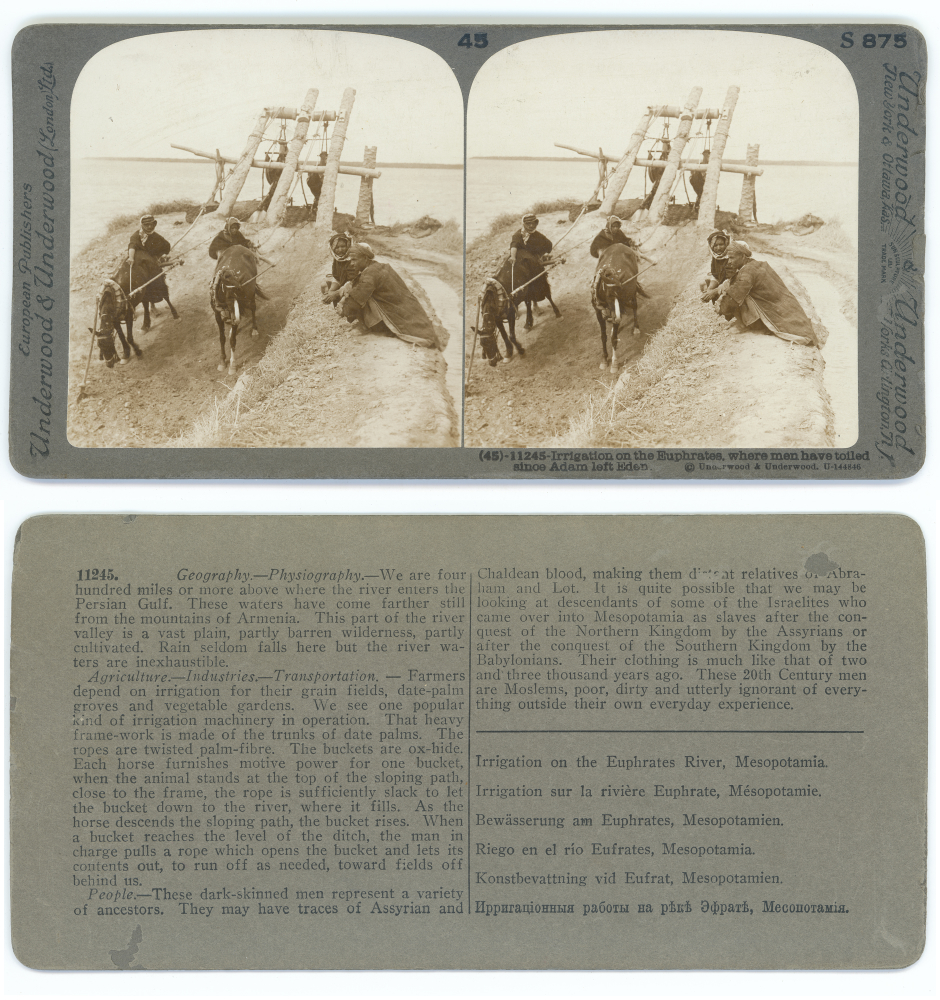
Source
Tim Hunt, U.S. Army, Irrigation canal Fira Shia, Iraq (2), Wikimedia Commons. Licence : Domaine public.Situer la civilisation mésopotamienne dans le temps
L'invention de l'écriture
Vers 3300 av. J.-C., en Mésopotamie, les Sumériens ont voulu conserver les traces des biens qu'ils possédaient et qu'ils échangeaient. Ils ont gravé sur des tablettes d'argile fraîche des dessins représentant des nombres, des mots, des objets, des idées. On appelle ces signes des pictogrammes : la première écriture était née.
L'écriture sumérienne était néanmoins très compliquée. Elle a donc été simplifiée au cours des siècles suivants et les dessins ont été remplacés par des signes en forme de clou ou de coin. Pour reproduire cette forme, les Mésopotamiens utilisaient un roseau à bout triangulaire appelé calame. C'est ainsi que l'écriture cunéiforme est née, et notons qu'elle comporte près de 600 signes.
L'écriture cunéiforme, d'abord utilisée dans un but commercial, est devenue essentielle pour répondre à différents besoins dans les domaines religieux, administratifs, scientifiques, etc.
Les supports sur lesquels l'écriture est produite vont considérablement changer avec les années. Le papyrus et le parchemin viendront remplacer la tablette d'argile. Ces nouveaux supports permettent de tracer plus facilement les symboles et d'améliorer la compréhension du message que l'on veut transmettre.
Un métier particulier
Le scribe écrit à la main des textes administratifs, religieux et juridiques ou des documents privés. Puisqu'il est l'une des rares personnes à savoir écrire, il possède un statut particulier. Le prestige lié à ce métier lui donne une place enviée dans la hiérarchie sociale.
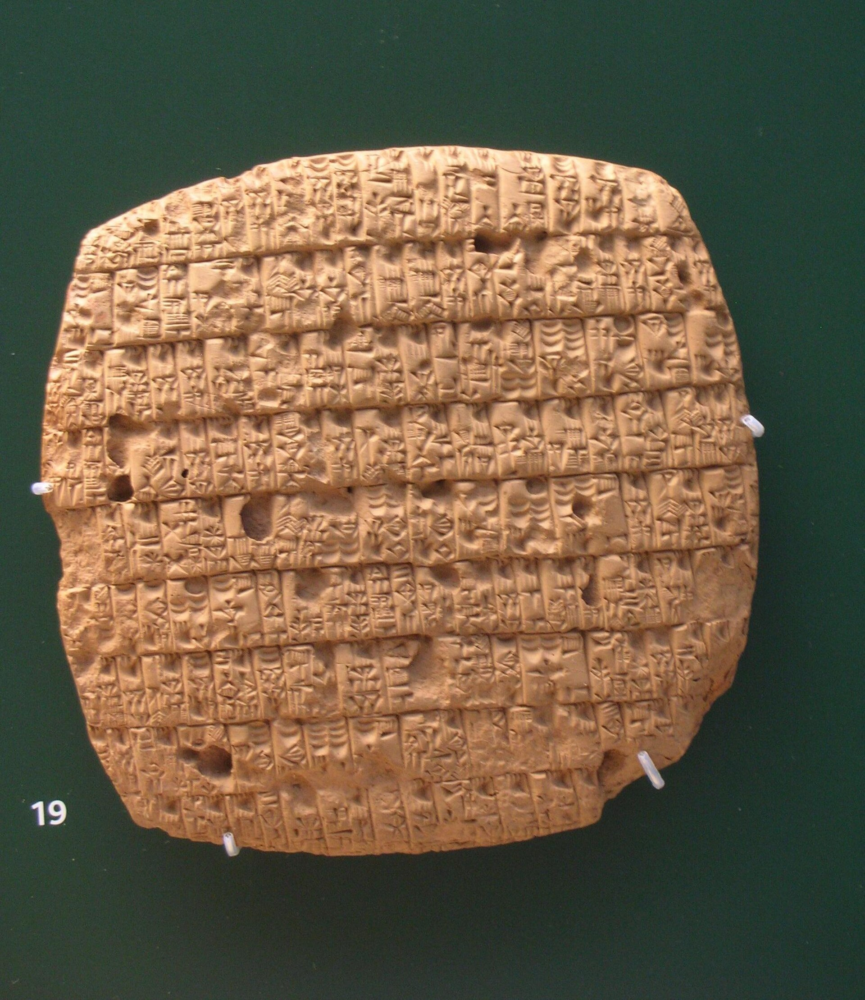
Source
Gavin.collins, Issue of barley rations, Wikimedia Commons. Licence : Domaine public.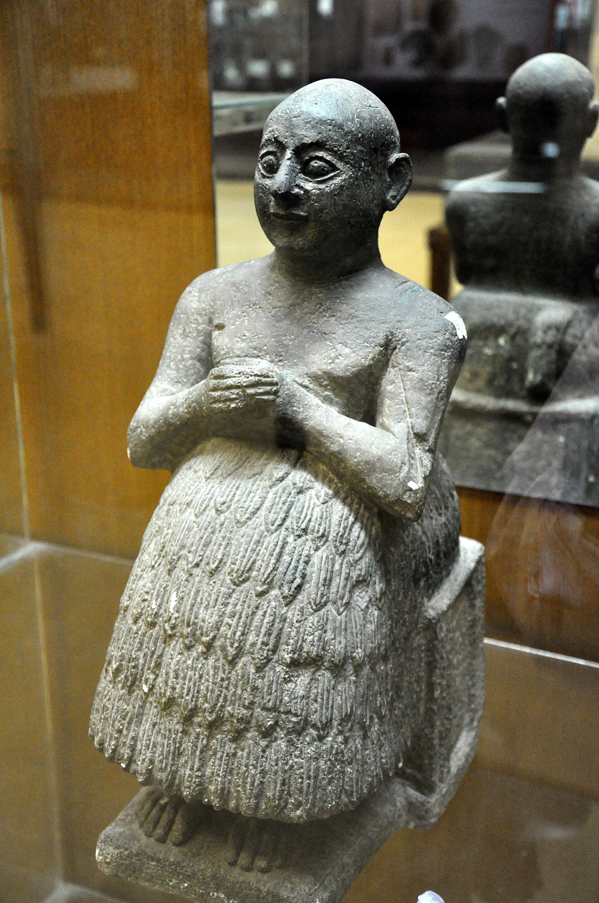
Source
Osama Shukir Muhammed Amin FRCP(Glasg), A replica of the seated statue of the Sumerian scribe Dudu, dedicated to god Ningirsu. The Sulaymaniyah Museum, Wikimedia Commons. Licence : Creative Commons BY-SA 4.0.L'utilité de l'écriture dans la société mésopotamienne
Six documents montrent à quoi l'écriture a servi une fois inventée. Pour chacun, observe d'abord la fiche et formule ta propre réponse, puis vérifie-la en révélant la fonction.
Les fonctions de l'écriture dans la société mésopotamienne
Observe chaque document, devine sa fonction, puis vérifie
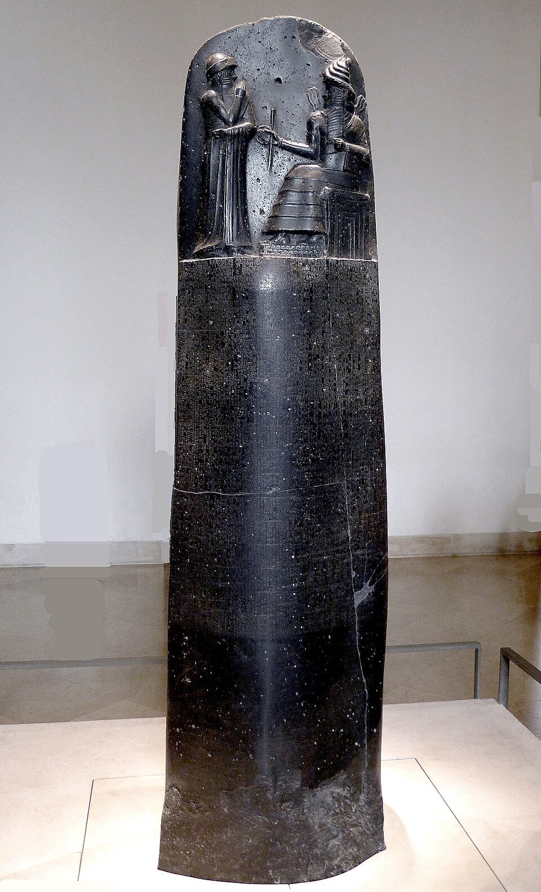
Source
Mbzt, P1050763 Louvre code Hammurabi face rwk, Wikimedia Commons. Licence : Creative Commons BY 3.0.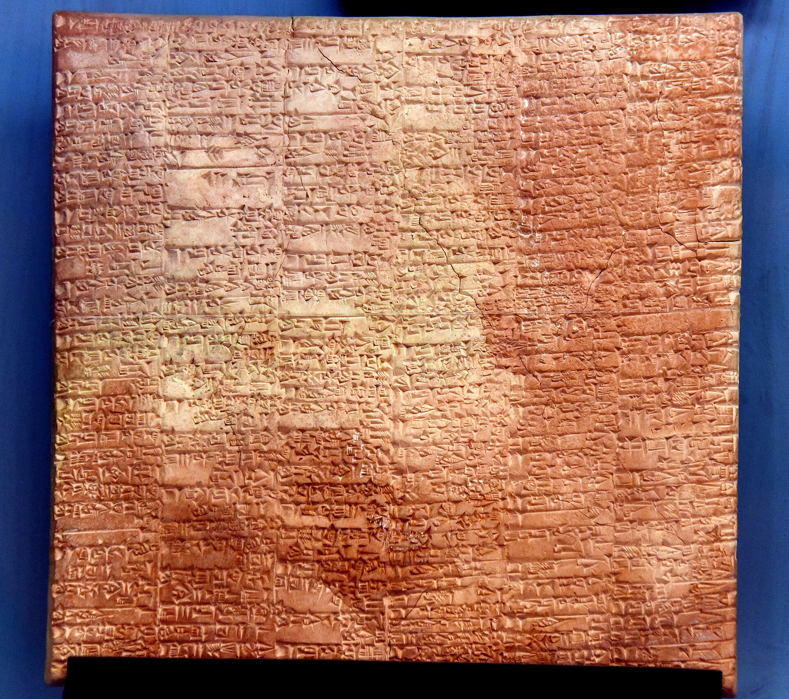
Source
Osama Shukir Muhammed Amin FRCP(Glasg), Large inventory list written during the 48th regnal year of Shulgi, king of Ur. From Lagash, Iraq. Ur III period, c, 2046 BCE. Ancient Orient Museum, Istanbul, Wikimedia Commons. Licence : Creative Commons BY-SA 4.0.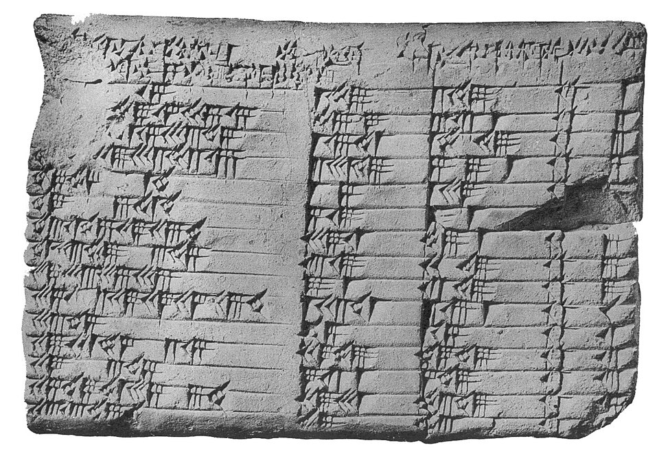
Source
photo author unknown, Plimpton 322, Wikimedia Commons. Licence : Domaine public.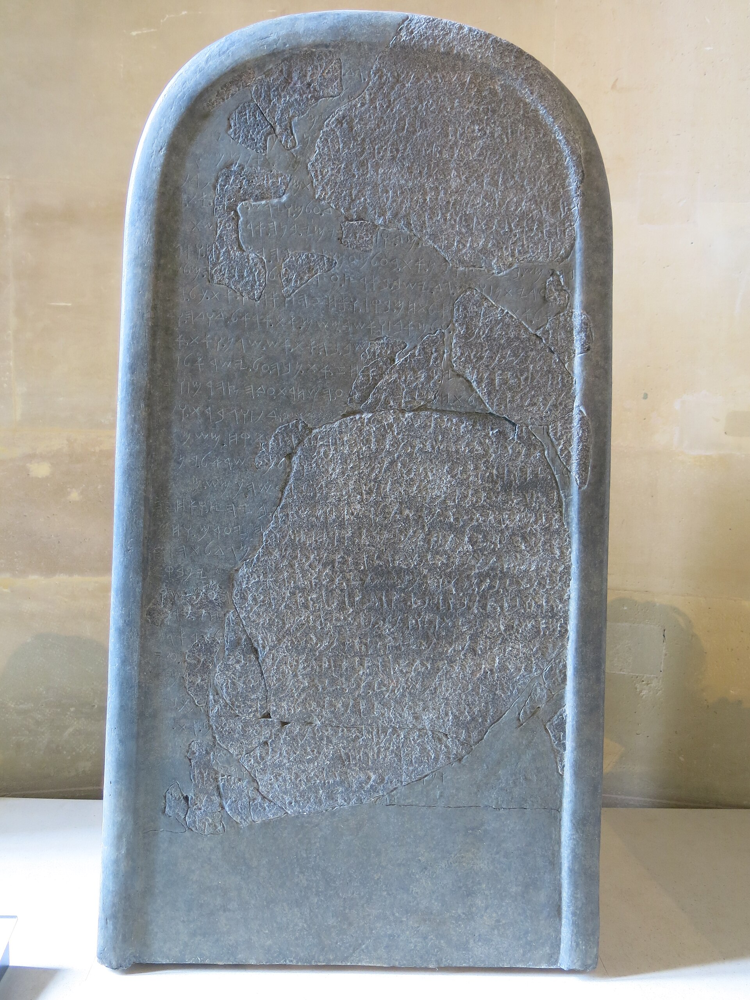
Source
Tangopaso, Mesha stele (Louvre, AO 5066), Wikimedia Commons. Licence : Domaine public.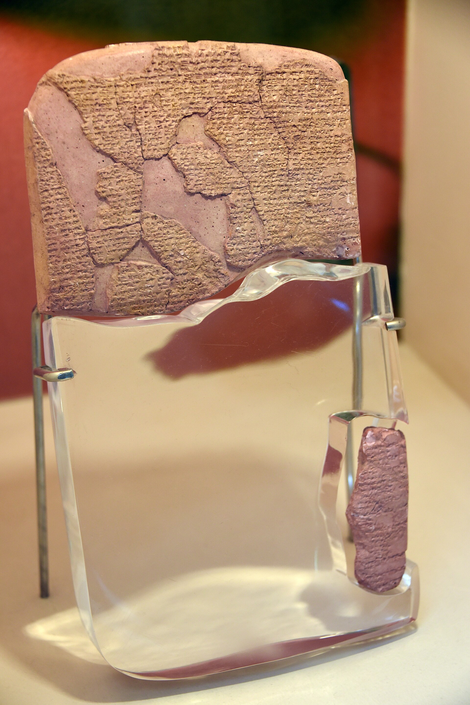
Source
Osama Shukir Muhammed Amin FRCP(Glasg), Kadesh Treaty, written in Akkadian. 1269 BCE. From Boğazköy, Turkey. Clay tablet. Museum of the Ancient Orient, Istanbul, Turkey, Wikimedia Commons. Licence : Creative Commons BY-SA 4.0.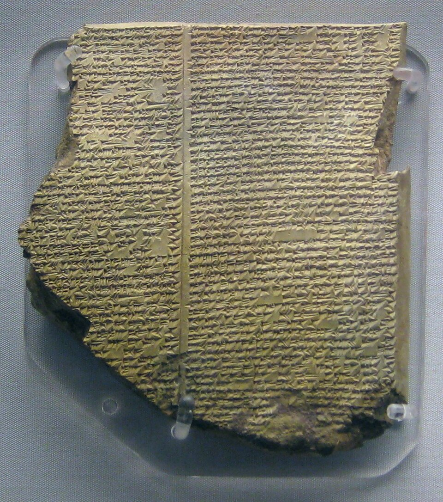
Source
Auteur inconnu, British Museum Flood Tablet, Wikimedia Commons. Licence : Creative Commons Zero.Babylone : Hammourabi et son code de lois
Au début du 2e millénaire avant notre ère, la cité de Babylone, alors un modeste village sur les rives de l'Euphrate, était loin de la cité-État légendaire qu'elle allait devenir. C'est sous l'impulsion de son 6e roi, Hammourabi, qui accéda au trône vers 1792 av. J.-C., que son destin bascula. Héritant d'un royaume de taille réduite, Hammourabi se révéla être un stratège militaire et un diplomate redoutable. Par un jeu complexe d'alliances, de guerres et de trahisons, il parvint à éliminer un à un ses puissants voisins, unifiant une grande partie de la Mésopotamie sous son autorité et faisant de Babylone la capitale d'un vaste empire.
Mais la renommée d'Hammourabi ne repose pas uniquement sur ses conquêtes. Il fut également un grand bâtisseur qui transforma sa capitale. Sous son règne de 43 ans, Babylone connut un développement urbain sans précédent. De nouveaux canaux furent creusés pour l'irrigation et le transport, des fortifications furent érigées, et de magnifiques temples, appelés ziggourats, furent construits à la gloire du dieu tutélaire de la ville, Marduk. Grâce à lui, Babylone devint non seulement une puissance politique, mais aussi le coeur religieux et intellectuel de la Mésopotamie, attirant savants, prêtres et artistes.
Source
Mbzt, P1050763 Louvre code Hammurabi face rwk, Wikimedia Commons. Licence : Creative Commons BY 3.0.L'héritage le plus durable d'Hammourabi est sans conteste son célèbre code de lois. Bien qu'il ne s'agisse pas du premier recueil de lois de l'Histoire, il en est le plus complet et le mieux conservé de cette époque. Gravé sur une stèle de basalte de plus de deux mètres de haut, ce texte n'est pas un code juridique au sens moderne, mais plutôt une compilation de décisions de justice, une sorte de jurisprudence visant à unifier le droit dans son royaume.
Le principe fondamental de ce code est la Loi du Talion, résumée par la célèbre formule « oeil pour oeil, dent pour dent ». Cependant, l'application de cette loi n'était pas égale pour tous : elle variait considérablement en fonction de la classe sociale des individus impliqués.
Par exemple, une agression commise par un homme libre sur un autre homme libre était punie par la réciprocité, mais si la victime était un esclave, la sanction se limitait souvent à une simple compensation financière. Le code couvrait tous les aspects de la vie quotidienne : le droit de la famille, le commerce, les dettes, la propriété et les fautes professionnelles.
Le roi installe plusieurs stèles de basalte représentant ce code dans son royaume, afin que toute personne puisse connaître la loi. Cette tactique permet au roi de mieux contrôler l'ensemble de sa population. Le Code d'Hammourabi contient 282 articles.
Quelques articles du Code d'Hammourabi
- « Si un homme a volé le trésor du dieu ou du palais, cet homme est passible de mort, et celui qui aurait reçu de sa main l'objet volé est passible de mort. »
- « Si un enfant a frappé son père, on lui coupera les mains. »
- « S'il a frappé le cerveau d'un esclave d'homme libre, on lui coupera l'oreille. »
- « Si un homme a frappé le cerveau d'un homme de condition supérieure à lui, il sera frappé en public de 60 coups de nerf de boeuf. »
- « S'il a brisé un membre d'un homme libre, on lui brisera un membre. »
- « Si une femme ne prend pas garde à soi et est sorteuse, dilapide sa maison, discrédite son mari, cette femme on la jettera à l'eau. »
Les cités-États : indépendantes les unes des autres
La Mésopotamie regroupe plusieurs villes qu'on appelle cités-États, c'est-à-dire des villes qui possèdent les mêmes pouvoirs qu'un pays actuel.
Elle est en mesure de prendre toutes ses décisions de façon indépendante par rapport aux autres territoires. En d'autres mots, une cité-État possède son propre gouvernement, ses propres lois et ses propres institutions.
Même si les cités-États mésopotamiennes ont des modes de fonctionnement différents, on y retrouve souvent des institutions et des infrastructures semblables. Par exemple, le roi habite généralement dans un palais qui est entouré de fortifications. On retrouve également d'autres bâtiments comme un marché, des temples et des ziggourats.
La hiérarchie sociale mésopotamienne
- Le roi est le chef de la cité-État. Il s'occupe de l'armée et gère l'administration de la cité-État : travaux d'irrigation, construction, surplus de nourriture, impôts, etc. Il possède un pouvoir quasi absolu, qu'il détient directement des dieux. Dans cette section, nous pouvons aussi inclure les nobles de la famille royale.
- Les scribes, les prêtres et les soldats sont les fonctionnaires de l'État. Grâce à eux, tout fonctionne. Ils assistent le roi dans sa prise de décisions, exécutent ces ordres et possèdent les terres. Ils ont ainsi une place de choix dans la hiérarchie sociale.
- Les artisans et les marchands ont le contrôle sur le commerce. Les artisans fabriquent les objets nécessaires à la vie quotidienne. Les commerçants, quant à eux, vendent des produits au marché et importent des ressources naturelles nécessaires au bon fonctionnement de la cité-État.
- Les paysans s'occupent de l'alimentation de la population en cultivant les champs et en élevant le bétail. Ils ont des comptes à rendre au roi, qui, rappelons-le, s'occupe de gérer les surplus alimentaires.
- Les esclaves, finalement, sont des prisonniers de guerre ou des personnes n'ayant pas pu rembourser une dette. Ils sont utilisés en tant qu'ouvriers ou en tant que domestiques.
L'Étendard d'Ur
L'Étendard d'Ur est un coffre de bois de 21,7 cm de haut et 50 cm de long, ajusté d'une mosaïque de nacre et de calcaire rouge, sur fond de lapis-lazuli. Il est actuellement dans un état restauré, les effets du temps au cours de plusieurs millénaires ayant dégradé le bois et le bitume servant de colle à la mosaïque.
L'étendard comporte quatre côtés : deux plus importants, de forme rectangulaire, désignés sous le nom de « face de la Guerre » et « face de la Paix ». Chacun de ces quatre côtés comporte trois registres horizontaux, qui se lisent de bas en haut et de gauche à droite, sauf pour les deux registres supérieurs où les personnages convergent vers le roi.
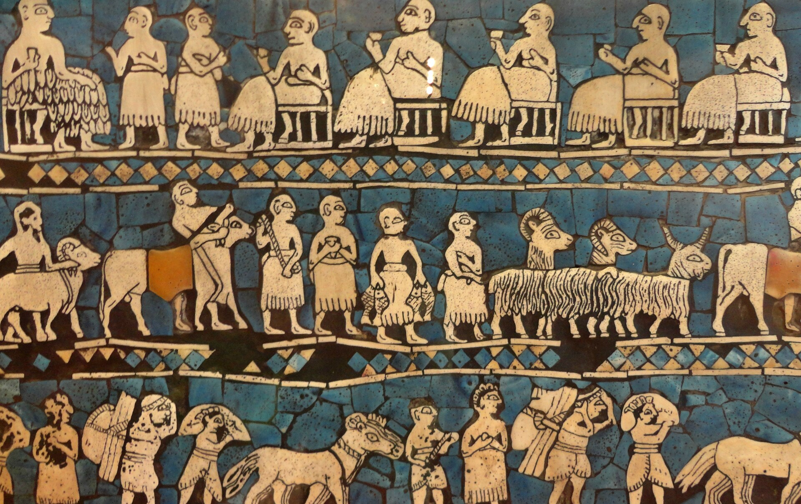
Source
Juan Carlos Fonseca Mata, Standard of Ur - Peace Panel - Sumer, Wikimedia Commons. Licence : Creative Commons BY-SA 4.0.Explorer l'Étendard d'Ur en image interactive
La religion mésopotamienne
La religion mésopotamienne est une religion polythéiste, c'est-à-dire qu'elle compte plusieurs dieux. Les dieux mésopotamiens représentent les forces de la nature, les sentiments et des qualités telles que la ruse et l'intelligence.
De la même manière que la société mésopotamienne, la religion est très hiérarchisée. En effet, chaque divinité a son rôle et ses responsabilités. De plus, les dieux ne sont pas tous aussi puissants les uns que les autres.
Les dieux et déesses de la religion mésopotamienne ressemblent beaucoup aux êtres humains. Effectivement, ils ont une apparence et des caractéristiques humaines : qualités, défauts, forces, faiblesses, émotions. La grande différence entre les dieux et les humains est l'immortalité des divinités.
Les ziggourats et les prêtres
Dans les cités-États mésopotamiennes, le culte, c'est-à-dire l'hommage rendu à un dieu, s'exerce dans les ziggourats ou dans les temples. Ces derniers sont considérés comme les résidences des dieux. On y pénètre dans le plus grand respect. Dans ces lieux sacrés, on pratique des cérémonies, des sacrifices et on y dépose des offrandes aux dieux.
Ainsi, les prêtres ont un grand rôle à jouer dans la société mésopotamienne. En effet, ils sont considérés comme les intermédiaires entre la population et les dieux.
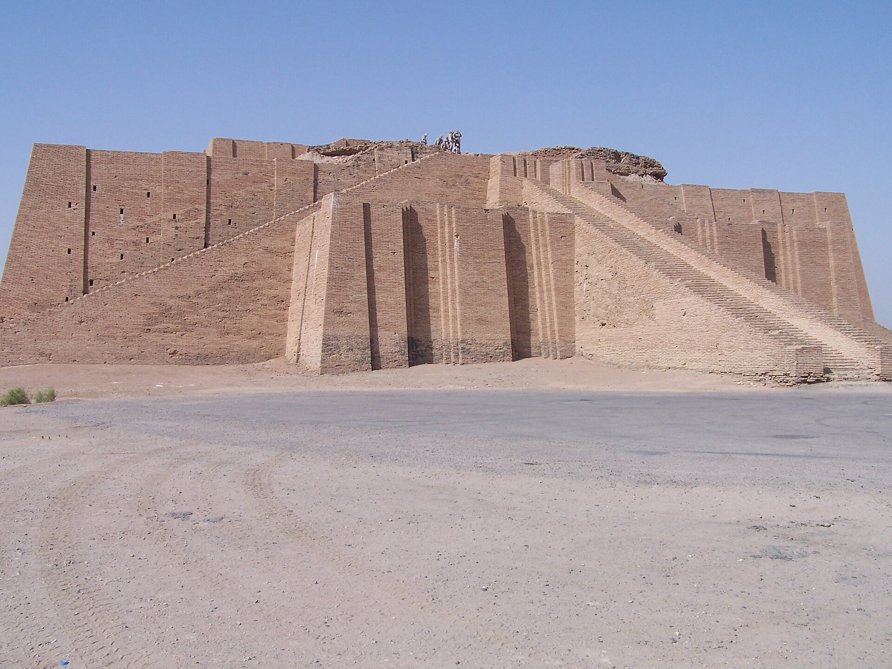
Source
en:User:Hardnfast, Ancient ziggurat at Ali Air Base Iraq 2005, Wikimedia Commons. Licence : Creative Commons BY 3.0.Le vase d'Uruk, taillé dans l'albâtre vers -3200, montre une procession d'habitants qui apportent des paniers de fruits et de grains à la déesse de la cité. C'est une image directe du lien entre le surplus agricole, le temple et le pouvoir religieux.
Enlil est l'un des dieux principaux de la religion mésopotamienne. Il est considéré comme le roi des dieux, divinité suprême du panthéon mésopotamien. C'est lui qui, par ses décisions, attribue la suprématie aux rois humains, qui lui accordent donc une place de choix dans leurs offrandes et leurs inscriptions commémoratives.
Le commerce en Mésopotamie
L'économie de la Mésopotamie repose fondamentalement sur l'échange des surplus agricoles contre des minerais provenant des régions avoisinantes, comme l'argent d'Anatolie, le cuivre d'Oman ou le lapis-lazuli de la vallée de l'Indus. Dès 3400 avant notre ère, les Sumériens ont initié le commerce et les marchands d'une cité-État comme Ur importaient des métaux d'Asie centrale. La cité-État d'Assur est ensuite devenue un centre métallurgique et commercial de premier plan.
L'âge du fer a constitué un tournant majeur pour l'économie et la puissance militaire dans la région. Au départ, les Hittites détenaient le savoir-faire de la sidérurgie, mais les Assyriens ont par la suite maîtrisé cette technologie cruciale. Cela leur a donné une supériorité militaire, jetant les bases de leur empire. L'État assyrien a alors mis en place un système économique centralisé, exerçant un monopole sur les métaux. Ce contrôle s'étendait des mines jusqu'aux routes commerciales et aux ateliers de forgerons, où étaient fabriquées les armes.
Ce contrôle de l'État a favorisé l'émergence de nouvelles professions spécialisées, telles que banquiers, commerçants et investisseurs privés. Ceux-ci opéraient depuis des quartiers dédiés, les kârums.
Les marchands et les commerçants utilisaient les atouts de la Mésopotamie afin de transporter les marchandises sur de longues distances. En effet, la présence de nombreux fleuves dans cette région de la planète facilite les déplacements.
Afin de pouvoir voyager par ceux-ci, les Mésopotamiens construisent des barques faites de roseaux et des galères de bois, pour les longues distances.
Lorsqu'ils sont obligés de transporter les marchandises à pied, les Mésopotamiens font appel aux animaux. En effet, l'âne est souvent utilisé. Ce dernier tire un chariot, innovation technique importante et permise grâce à l'invention de la roue.
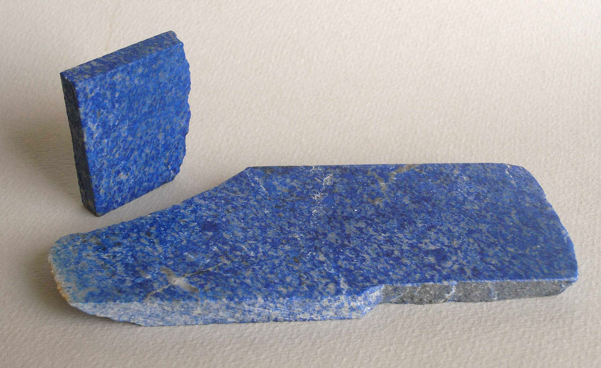
Source
Lysippos, Lapislazuli afghanistan-b, Wikimedia Commons. Licence : Creative Commons BY-SA 3.0.Applications d'apprentissage
Quatre applications proposées par Mme Johanne Rodrigue et M. Mathieu Mercier.
Pour aller plus loin
- Babylone, joyau de l'Ancien monde, National Geographic
- Visite 3D de la tombe de Ramsès VI